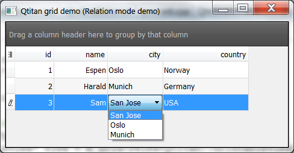
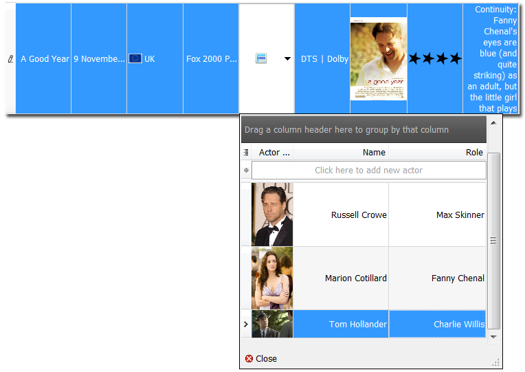

Relation mechanism in QtitanDataGrid
QtitanDataGrid supports relations between two associated models. The mechanism is independent from such SQL models as QSqlRelationalTableModel and can be used for any models inherited from QAbstractItemModel. This mechanism is configured separately for each grid column.
The Relation mechanism supports two operating modes:
- Relation mode. The mode that controls the relation between two models using a foreign key.
- MasterDetails mode. The mode that implies that each row of the master model has a subordinate model.
Relation mode
This operating mode allows you to use a foreign key to represent data from an external model in the same way as if they were inside the master model. For instance, the mode makes it possible to configure the grid in such a way that the data for the Qt::DisplayRole role will be taken from the master model connected to the grid controller, while the icon data (Qt::DecorationRole role) will be loaded from the external model. As a rule, the master model only contains the foreign key that points to the location of data for other roles in the external model.
The scheme below illustrates the mechanism structure:
- Master model - the model that is passed to the grid and is used for displaying data.
- Relation model - the external model the grid connects to for fetching additional data.
- ForeignKey Column - the column of the external model that is used for storing the foreign key.
- ForeignKey Role - the role of the model that is used for storing the foreign key in the external model.
- ForeignKey MasterRole - the role of the current model that is used for obtaining the key of the current cell.
- ForeignKey Value - the value of the access key for the external model. It is stored as a QVariant value in the master model with a role that can be redefined.
The mechanism can be managed with the help of the GridModelDataBinding object accessible from grid columns. You can enable the Relation mode using the setRelationMode() method and by passing the necessary mode as a parameter.
Qtitan::GridTableColumn* column = (Qtitan::GridTableColumn *)view->getColumnByModelColumnName("Country"); column->dataBinding()->setRelationMode(GridModelDataBinding::Relation); column->dataBinding()->setRelationModel(countriesModel); column->dataBinding()->setForeignKey("id"); column->dataBinding()->setRoleMapping(Qt::DisplayRole, "Name"); column->dataBinding()->setRoleMapping(Qt::DecorationRole, "Flag");
The setRelationModel() function defines a relation with an external model. Calling setForeignKey("id") will define the "id" column of the external model as a storage of external keys. By default, Qt::DisplayRole is used as the role for obtaining values from the external model ("id" column). This value is used as the second paramter in the setForeignKey() function:
setForeignKey("id", Qt::UserRole)
The third paramter of the setForeignKey() function defines the value of the role that will be used for obtaining the value of the external key from the master model of the current row. Qt::EditRole is the default value.
setForeignKey("id", Qt::UserRole, Qt::DisplayRole)
The setRoleMapping(Qt::DisplayRole, "Name") method defines the rule for obtaining the Qt::DisplayRole role from the master model. To get the Qt::DisplayRole value of the master model, the grid will use the value from the "Name" column of the foreign model (foreignModel). By default, the Qt::DisplayRole role is used for obtaining this value from the external model. It can be redefined by passing it as the third parameter to the setRoleMapping() function. Example:
column->dataBinding()->setRoleMapping(Qt::DecorationRole, "Flag", Qt::DecorationRole);
Migration from QSqlRelationalTableModel
Let's take a look at a Qt example.
QSqlRelationalTableModel* model = new QSqlRelationalTableModel; ....... model->setTable("employee"); model->setRelation(2, QSqlRelation("city", "id", "name")); model->setRelation(3, QSqlRelation("country", "id", "name")); QTableView *view = new QTableView; view->setModel(model);
Let's see how this Qt example should be adapted for working with QtitanDataGrid.
QSqlRelationalTableModel* model = new QSqlRelationalTableModel; model->setTable("employee"); QSqlQueryModel* city = new QSqlQueryModel; city->setTable("city"); QSqlQueryModel* country = new QSqlQueryModel; country->setTable("country"); Qtitan::GridTableView* view = qtitangrid->view<Qtitan::GridTableView>(); view->setModel(model); Qtitan::GridTableColumn* column = (Qtitan::GridTableColumn *)view->getColumnByModelColumn(2); column->dataBinding()->setRelationMode(GridModelDataBinding::Relation); column->dataBinding()->setRelationModel(city); column->dataBinding()->setForeignKey("id"); column->dataBinding()->setRoleMapping(Qt::DisplayRole, "name"); column = (Qtitan::GridTableColumn *)view->getColumnByModelColumn(3); column->dataBinding()->setRelationMode(GridModelDataBinding::Relation); column->dataBinding()->setRelationModel(country); column->dataBinding()->setForeignKey("id"); column->dataBinding()->setRoleMapping(Qt::DisplayRole, "name");

Support of the Relation mode by cell editors
QtitanDataGrid has several editors supporting this mode.
- GridComboBoxEditor - the editor uses a ComboBox control for value selection.
- GridTableEditor - the editor uses an additional table (QtitanDataGrid) in in popup window for value selection.
MasterDetails mode
This is a special mode that enables you to show additional tabular data in grid cells. Each grid cell is associated with an external data source represented by a model inherited from an abstract class. A model cell for which a table of details is generated must contain a foreign key besides a readable description. The value of the foreign key should be accessible through a configurable role. By default, Qt::EditRole is used. The external model should contain a column with foreign keys. The role for obtaining a key from the external model can be configured.
The rows of the table of details are the rows from the external model for which the values of keys from the keys column match the value of the foreign key from the cell of the master model.
Let's take a look at an example that demonstrates the process of configuring this mode:
QSqlTableModel* actorsModel = new QSqlTableModel; Qtitan::GridTableColumn* column = (Qtitan::GridTableColumn *)view->getColumnByModelColumnName("Cast"); column->dataBinding()->setRelationMode(GridModelDataBinding::MasterDetailsRelation); column->dataBinding()->setRelationModel(actorsModel); column->dataBinding()->setForeignKey("film_id");
The setRelationMode() and setModel() methods set the master details mode and define an external data source represented by a Qt model. The setForeignKey() method sets the settings of the foreign key that will be represented by the "film_id" column and the Qt::DisplayRole role of the external model. The value of the foreign key for which a table of details should be generated can be obtained with the help of the Qt::EditRole role of the current cell. If you need to use another role, it can be set by passing it as the third parameter of the setForeignKey() function.
Support of the MasterDetails mode by cell editors
QtitanDataGrid comes with an editor (GridTableEditor) supporting this mode. To start using it, switch the column editor to GridTableEditor using the code below:
column = (Qtitan::GridTableColumn *)view->getColumnByModelColumnName("Cast"); column->setEditorType(Qtitan::TableEditorType);
The cell editor automatically detects the mode used and keeps working on its own.

Differences between Relation mode and MasterDetails mode
Although both modes use the Foreign Key, they are fundamentally different in the following aspects:
- There can be only one row in the external model for a specific value of the Foreign Key in the Relation mode. If there are several rows, the first random one will be used. MasterDetails mode supports an indefinite number of records with a set Foreign Key. Each record forms a row in the table of details.
- In the Relation mode, editing is carried out in the master model. Specifically, the Foreign Key is changed. In the MasterDetails mode, editing is performed on the side of the external model. It implies the modification of the cell content with the exception of the cells containing the Foreign Key. In the MasterDetails mode, the Foreign Key in the master and external models stays the same.
- The MasterDetails mod also implies the addition of new and removal of unnecessary rows in the external model. The Relation mode does not allow you to do that.
See also GridModelDataBinding.